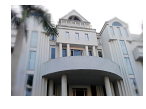

人文暨設計學院
人文暨設計學院是整合「語言文化」與「影像傳播」特色的學術單位，共有「視覺傳達設計系數位文創設計碩士在職專班」、「應用外語系英文組及日文組」、等一所二系三個學術單位，學術上更溶合「通識教育中心」與「體育室」二個校級授課單位及「數位文創技術研發中心」；在輔助教學方面，設有「藝文中心」、「語文中心」等兩個單位。兼容並蓄之發展特色，簡述如下：
第一項特色─發展文化創意核心價值
配合國家經濟發展政策、產業價值鏈的變遷，本校地緣所處之北台灣，其文化產業聚落正快速形成中，本院將透過創意創新及創業之規劃，形塑具國際專業設計人才，藉以滿足區域新興產業發展之需求。
第二項特色─專業與通識的融滲
衡酌主客觀條件與環境，溶合「影像與語文整合應用」之課程雙翼並舉的理想，重視人文陶冶與專業創作相融滲的教學演練法。
第三項特色─人文與科技的整合
藉由互動專業的教學型態，整合前瞻科技之思維，促使教師與學生之相互學習激盪及統整發展之職能培養。
第四項特色─發展國際遠略
檢視本土優質文化底蘊，以創意產業之同步發展為導向，放眼國際締結策略聯盟，發展獨特之優勢及永續經營之機制。
第五項特色─跨界整合與永續經營
分析研究國家各部會及法人等產學資源，積極整合發展創新的教學與研發模式，建置跨越科技與人文領域之專業平台，充分促成匯流與拔尖之永續機制。

●視覺傳達設計系數位文創設計碩士在職專班
本所注重國家文化創意政策及區域產業之發展趨勢，邀集北台灣具影響力之「產、官、學、研」相關學者專家共同授課，藉以激盪及形塑獨特之設計研究與創作方向。本所師資強調創新實務專題之論述與創作，運用設計學相關之質化與量化研究方法，客觀邏輯地累積獨特領域之專業知識。本所為配合學院特色以全英語授課之「影像與語文整合應用」學程，強化設計研究之自學中心，建置imac教室及電子書與APP Content應用相關軟體、體感等軟硬設備。